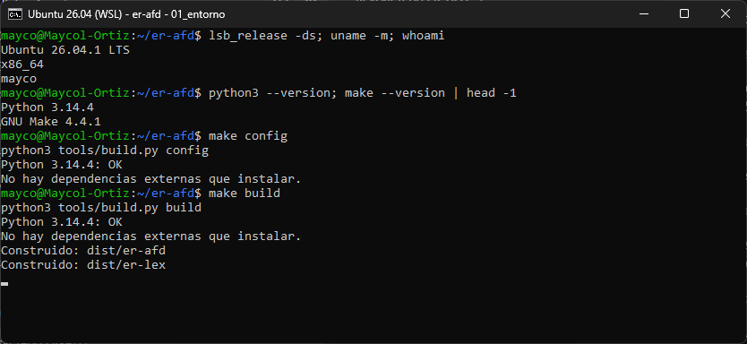
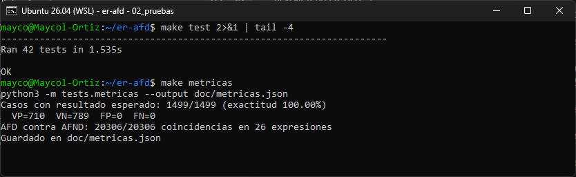
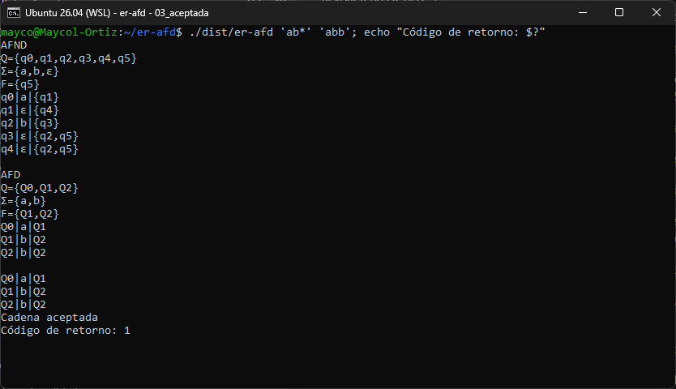
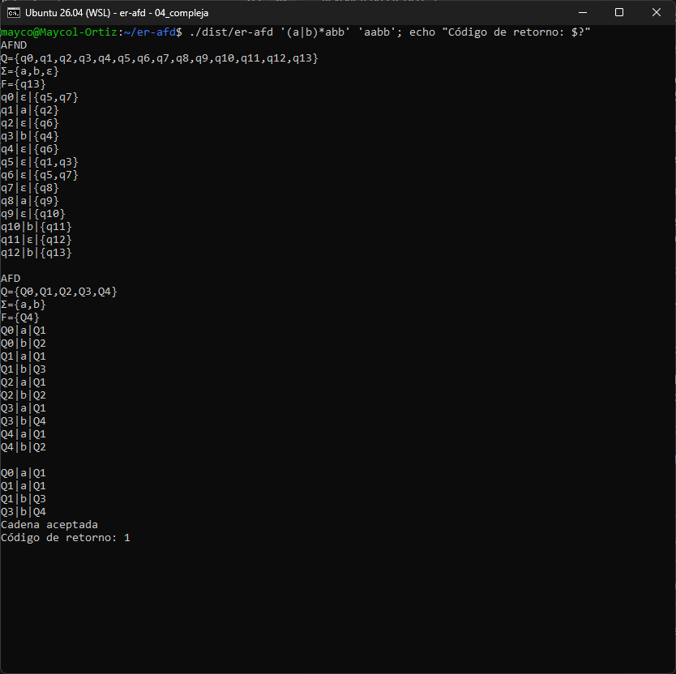
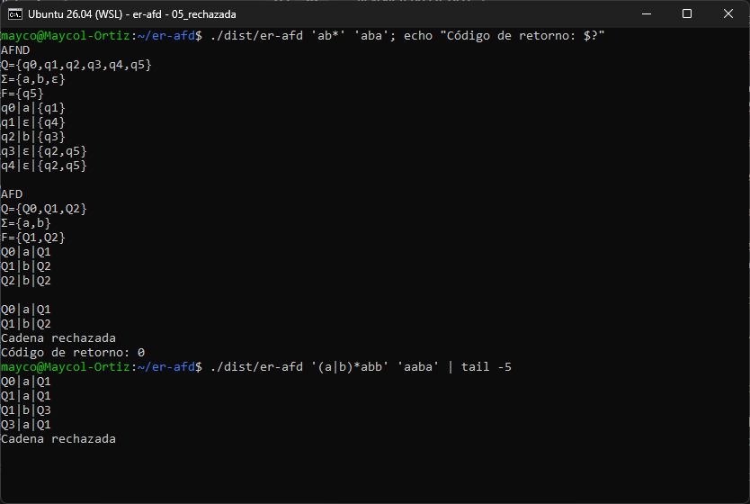
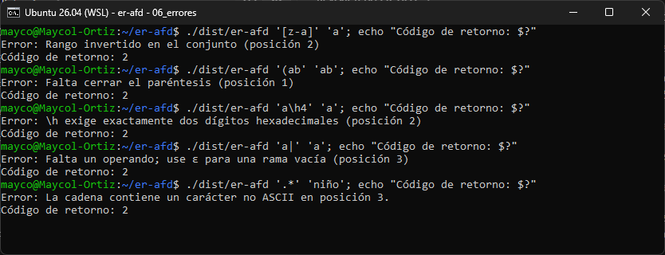
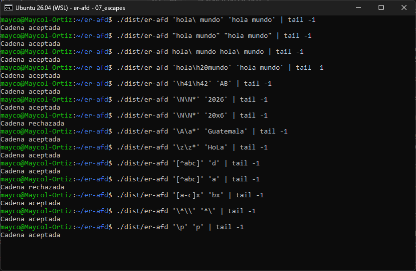
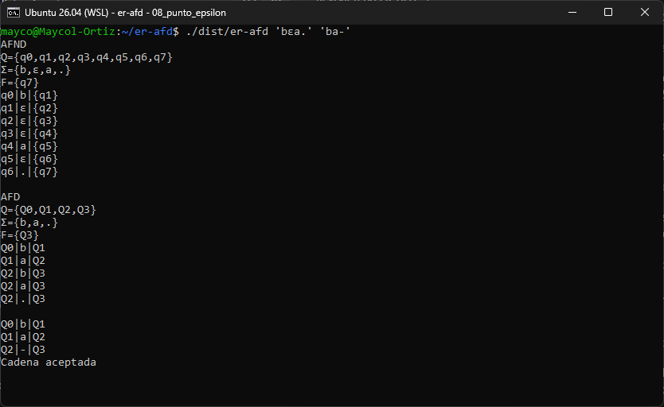
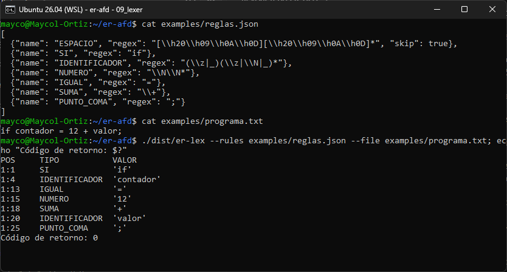
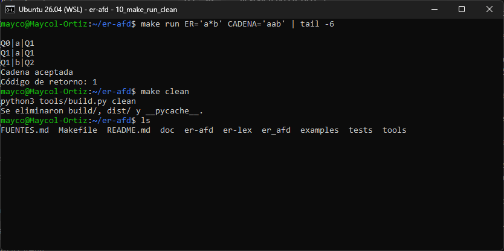

Todas las capturas son de una terminal de Ubuntu 26.04.1 LTS de 64 bits (WSL 2), con Python 3.14.4 y GNU Make
4.4.1, y un usuario normal sin permisos de root. Los comandos se ejecutaron desde la raíz del repositorio después de
make build.
| # | Caso | Comando | Esperado | Obtenido |
|---|---|---|---|---|
| 1 | Configuración y construcción | make config, make build | Sin errores | OK |
| 2 | Pruebas y métricas | make test, make metricas | Todas pasan | 42/42 |
| 3 | Cadena aceptada | er-afd 'ab*' 'abb' | Aceptada, 1 | Aceptada, 1 |
| 4 | Autómata más complejo | er-afd '(a|b)*abb' 'aabb' | Aceptada, 1 | Aceptada, 1 |
| 5 | Cadenas rechazadas | er-afd 'ab*' 'aba', '(a|b)*abb' 'aaba' | Rechazada, 0 | Rechazada, 0 |
| 6 | Errores de sintaxis y de entrada | [z-a], (ab, a\h4, a|, niño | Error, 2 | Error, 2 |
| 7 | Escapes, espacios y secuencias especiales | \ , comillas, \h, \N, \A, \a, \z, [^…], [a-c] | Según la tabla 7 | Coincide |
| 8 | Punto y épsilon en Σ | er-afd 'bεa.' 'ba-' | Σ={b,ε,a,.}, aceptada | Coincide |
| 9 | Tokenización con varias ER | er-lex --rules examples/reglas.json … | 7 tokens | 7 tokens |
| 10 | make run y make clean | make run ER='a*b' CADENA='aab' | Aceptada; limpieza | OK |
Se calculan con make metricas (archivo tests/metricas.py) y se guardan en
doc/metricas.json. Hay dos mediciones:
tests/cases.py, con
positivos y negativos para cada operador: literales, concatenación, unión, precedencia, paréntesis, Kleene, punto,
ε, conjuntos, rangos, conjuntos negativos, escapes, \N, \A, \a, \z
y \h. Las clases se prueban contra los 128 caracteres ASCII.abc1␣: 781
cadenas por expresión.| Medición | Resultado |
|---|---|
| Casos con resultado esperado | 1499 de 1499 correctos (100 %) |
| Verdaderos positivos / verdaderos negativos | 710 / 789 |
| Falsos positivos / falsos negativos | 0 / 0 |
| Precisión y exhaustividad | 1.00 y 1.00 |
| AFD contra AFND | 20306 de 20306 cadenas coinciden |
| Pruebas unitarias | 42 de 42 |
Se ve la distribución, la arquitectura de 64 bits y que el usuario no es root. make config revisa la
versión de Python y make build genera los ejecutables dist/er-afd y dist/er-lex.


ab* genera un AFND de 6 estados y un AFD de 3. Se imprimen ambas tablas con el formato
estado|símbolo|destino, después el recorrido de abb y el mensaje final. El código de
retorno es 1.

Combina unión, cerradura y concatenación. El AFND tiene 14 estados y el AFD 5. El recorrido de aabb
pasa por Q0, Q1, Q1, Q3 y Q4, y termina en un estado final. El reporte técnico explica cómo se forma cada estado
del AFD.

Con ab* y aba, desde Q2 no hay transición con a. El recorrido se detiene ahí y
la cadena se rechaza con retorno 0. Con (a|b)*abb y aaba el recorrido termina en Q1, que no es
final.

Un rango invertido, un paréntesis sin cerrar, un \h incompleto, una rama vacía y una cadena con
caracteres fuera de ASCII. En todos se muestra el error con su posición y el retorno es 2, distinto de un rechazo.

| ER | Cadena | Esperado | Qué se prueba |
|---|---|---|---|
hola\ mundo | hola mundo | Aceptada | Espacio con escape |
"hola mundo" | "hola mundo" | Aceptada | Espacio con comillas dobles |
hola\h20mundo | hola mundo | Aceptada | \h20 es el espacio |
\h41\h42 | AB | Aceptada | Código hexadecimal |
\N\N* | 2026 / 20x6 | Aceptada / Rechazada | Dígitos |
\A\a* | Guatemala | Aceptada | Mayúscula y minúsculas |
\z\z* | HoLa | Aceptada | Cualquier letra |
[^abc] | d / a | Aceptada / Rechazada | Conjunto negativo |
[a-c]x | bx | Aceptada | Rango |
\*\\ | *\ | Aceptada | Operadores como literales |
\p | p | Aceptada | Escape de un carácter normal |

En bεa. el alfabeto del AFND respeta el orden de aparición, Σ={b,ε,a,.}, porque ε está escrito en la
ER. El AFD no tiene ε. Desde Q2 la letra a y la b tienen su propia fila y el punto cubre
cualquier otro carácter, como el - de la cadena.

er-lex compila cada regla de examples/reglas.json a su AFD y recorre el archivo con todos a
la vez. Gana la coincidencia más larga y, en un empate, la primera regla: por eso if es SI y
no IDENTIFICADOR. Los espacios se descartan con "skip": true.

make run acepta la ER y la cadena como variables. Después, make clean deja solo los
fuentes.
